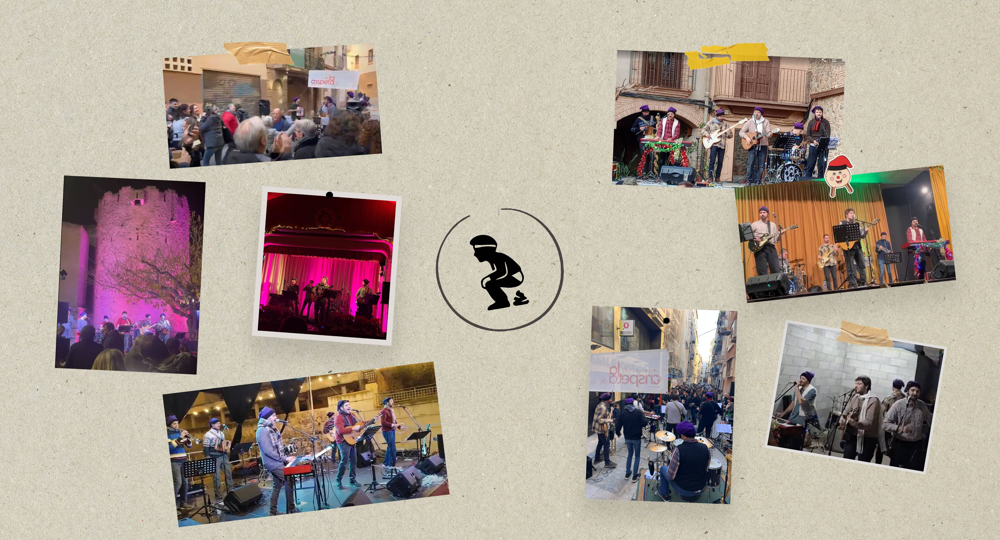
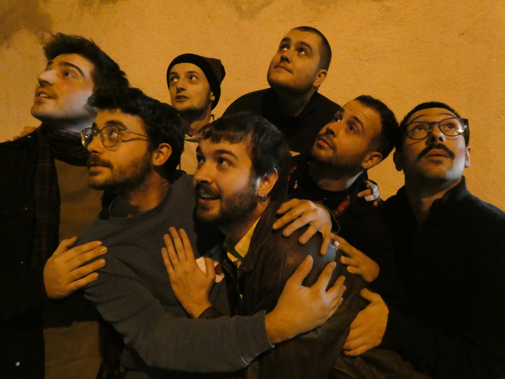
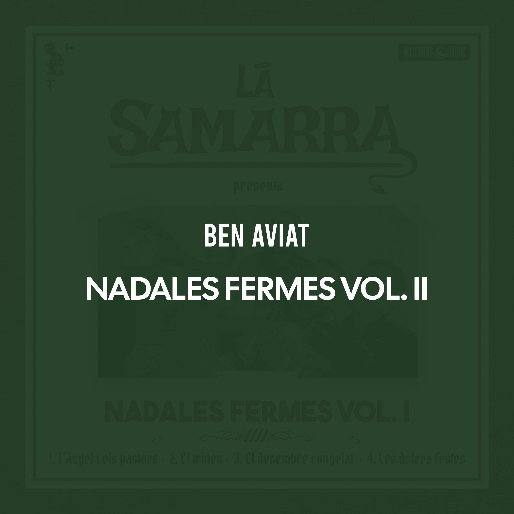
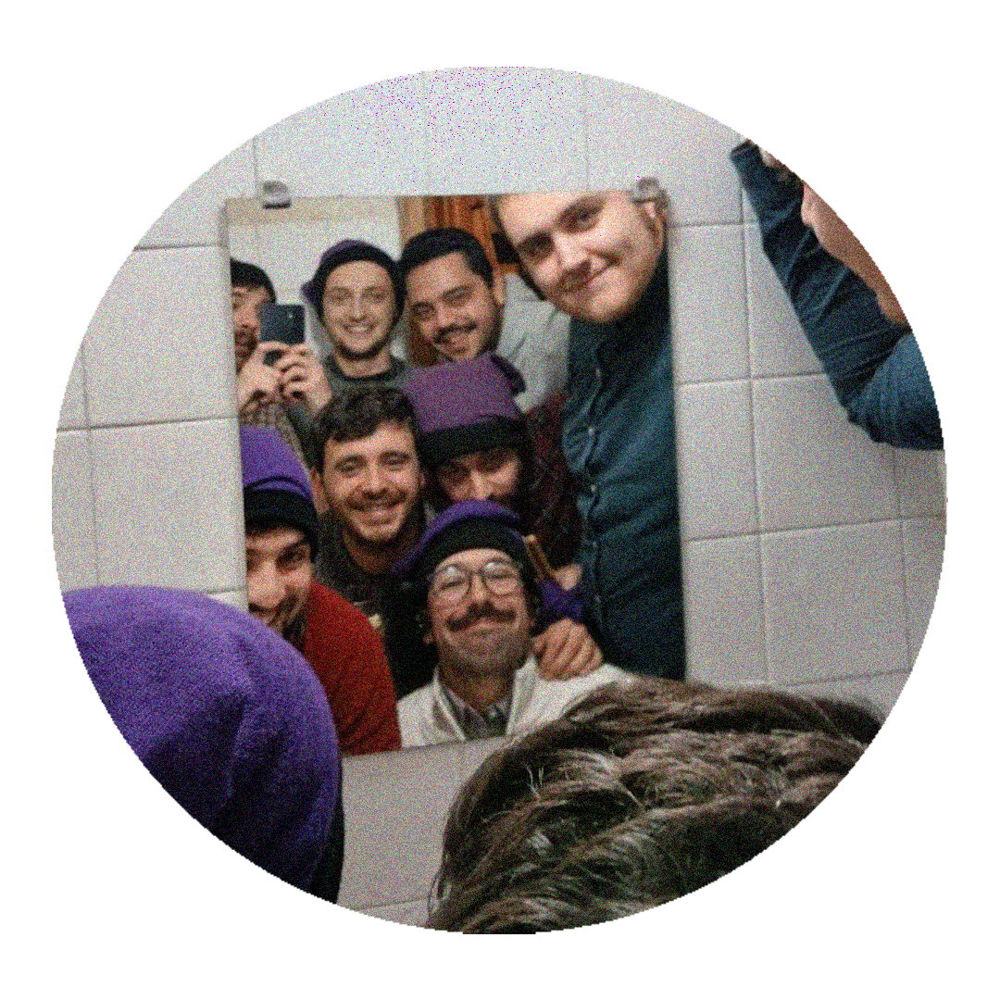

5
DES
La Selva del Camp
Pl. de les Pletes, a 2/4 de 6

EL GRUP
Quan arriben les festes, hi ha un fil que ressegueix els carrers, s'escola entre les fires i s'allarga fins a les sobretaules. Un fil musical que, any rere any, ens retorna a cançons que ja hi eren i perduraran.
La Samarra és un grup musical del Baix Camp que recull l'esperit de les nadales de sempre —les que tots coneixem, les que hem cantat alguna vegada— i les fa caminar per estils que conviden a ballar, cantar i xalar amb bona companyia.
En un concert de La Samarra, El 25 de desembre, Les dotze van tocant o La Pastora Caterina comparteixen escenari amb cançons de Nadal més modernes que ja s'estan convertint en clàssics de les nostres festes, com Quan somrius, És un desig, El Caganer d'Albert Pla o Aquí és Nadal i estic content!. Sempre en català i amb un so festiu i ballable, on l'acordió aporta l'arrel tradicional i una base que viatja entre el folk, el rock, l'escà i la rumba.
La història de La Samarra va començar el 2023, quan els amics de La Crispeta de Reus van organitzar una cantada de nadales al Casal Despertaferro. Alguns integrants del grup Terra Ferma, juntament amb amics, ens hi vam llançar. Allò que havia de ser una cantada es va convertir en una trobada que es va repetir l'any següent i que, de mica en mica, va sortir del Casal per arribar a l'Aleixar, Cambrils, Riudecanyes, la Selva del Camp i l'Argentera.
El 2025 vam publicar el primer EP, Nadales Fermes Vol. I, que recull l'esperit del que passa quan La Samarra puja a un escenari. Aquest 2026 arriba Nadales Fermes Vol. II, amb quatre cançons noves per continuar fent créixer aquest fil.
Perquè potser el Nadal dura només uns dies, però hi ha cançons que saben quedar-se una mica més.
Ens hi veiem enguany? Per Nadal, les nadales amb La Samarra.


EL GRUP
Quan arriben les festes, hi ha un fil que ressegueix els carrers, s'escola entre les fires i s'allarga fins a les sobretaules. Un fil musical que, any rere any, ens retorna a cançons que ja hi eren i perduraran.
La Samarra és un grup musical del Baix Camp que recull l'esperit de les nadales de sempre —les que tots coneixem, les que hem cantat alguna vegada— i les fa caminar per estils que conviden a ballar, cantar i xalar amb bona companyia.
En un concert de La Samarra, El 25 de desembre, Les dotze van tocant o La Pastora Caterina comparteixen escenari amb cançons de Nadal més modernes que ja s'estan convertint en clàssics de les nostres festes, com Quan somrius, És un desig, El Caganer d'Albert Pla o Aquí és Nadal i estic content!. Sempre en català i amb un so festiu i ballable, on l'acordió aporta l'arrel tradicional i una base que viatja entre el folk, el rock, l'escà i la rumba.
La història de La Samarra va començar el 2023, quan els amics de La Crispeta de Reus van organitzar una cantada de nadales al Casal Despertaferro. Alguns integrants del grup Terra Ferma, juntament amb amics, ens hi vam llançar. Allò que havia de ser una cantada es va convertir en una trobada que es va repetir l'any següent i que, de mica en mica, va sortir del Casal per arribar a l'Aleixar, Cambrils, Riudecanyes, la Selva del Camp i l'Argentera.
El 2025 vam publicar el primer EP, Nadales Fermes Vol. I, que recull l'esperit del que passa quan La Samarra puja a un escenari. Aquest 2026 arriba Nadales Fermes Vol. II, amb quatre cançons noves per continuar fent créixer aquest fil.
Perquè potser el Nadal dura només uns dies, però hi ha cançons que saben quedar-se una mica més.
Ens hi veiem enguany? Per Nadal, les nadales amb La Samarra.
LA SAMARRA
LA NOSTRA MÚSICA

2026

VIDEOLYRICS
